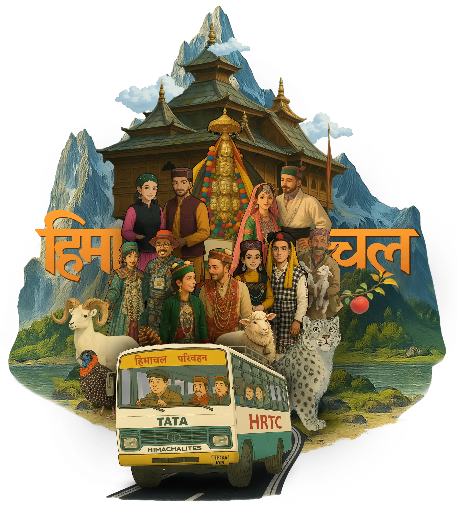
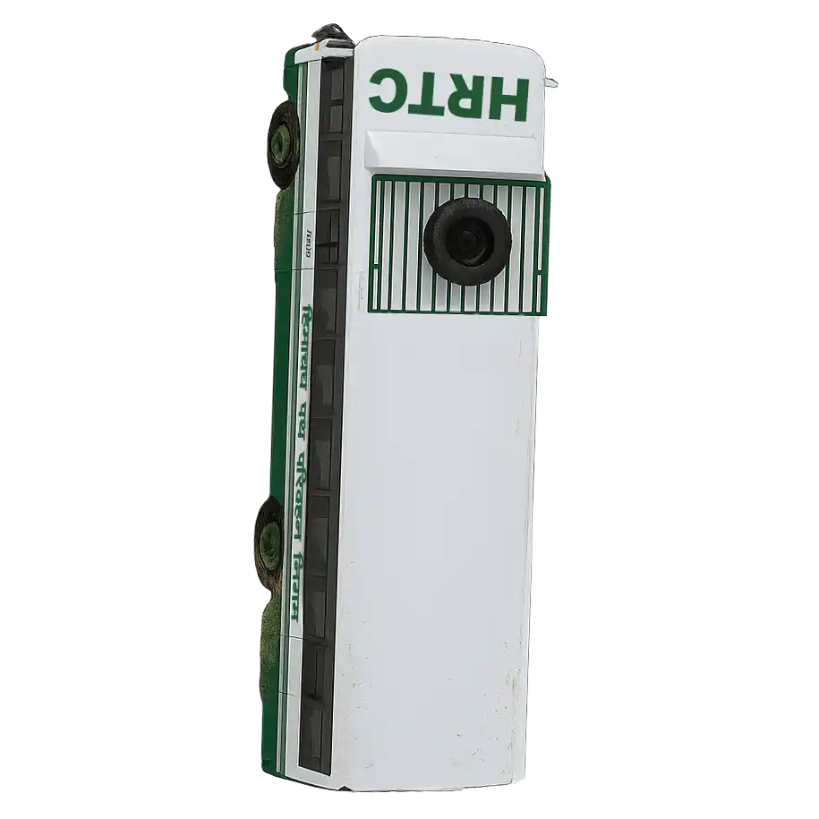
High up in the cold desert, Lahaul and Spiti feel like another world. The valleys are wide, silent, and marked by white stupas and stone houses. People here live by the seasons, farming barley, drinking butter tea, and surviving long winters with quiet strength. Monasteries like Key and Tabo hold stories a thousand years old.
When the roads finally open after months of snow, it feels less like travel and more like discovery.
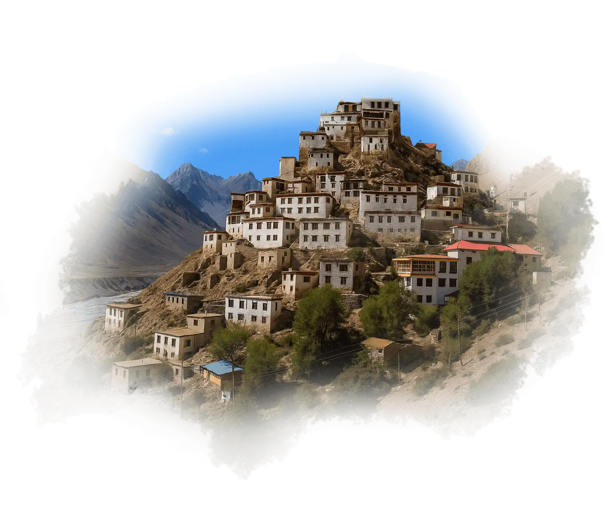
Kinnaur sits where India touches Tibet, a land of deep valleys and calm faith. Buddhist prayer flags and Hindu temples stand side by side, showing how belief blends here instead of dividing. People wear the green Kinnauri cap with pride and press oil from apricot kernels.
In autumn, the hills turn festive for Phulaich, when flowers are offered to gods and friends alike. Kinnaur feels both distant and beautifully familiar.
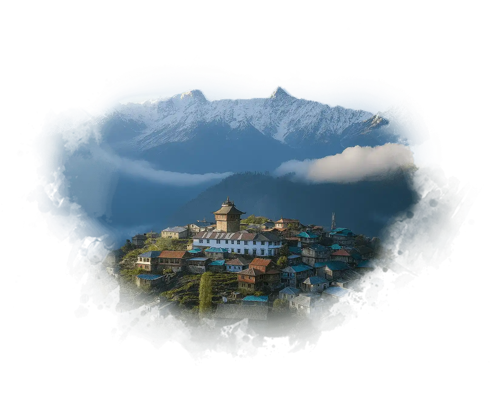
Chamba rests by the Ravi River, full of temples, embroidery, and songs that never left the mountains. Women still stitch the famous Chamba Rumal, and kitchens keep a jar of Chukh that adds more taste to any meal. During Minjar Mela, the town turns gold with silk threads and prayers for a good harvest.
If you travel towards Bharmour or Pangi, you’ll find a wilder Himachal: full of forests, faith, and old stories.
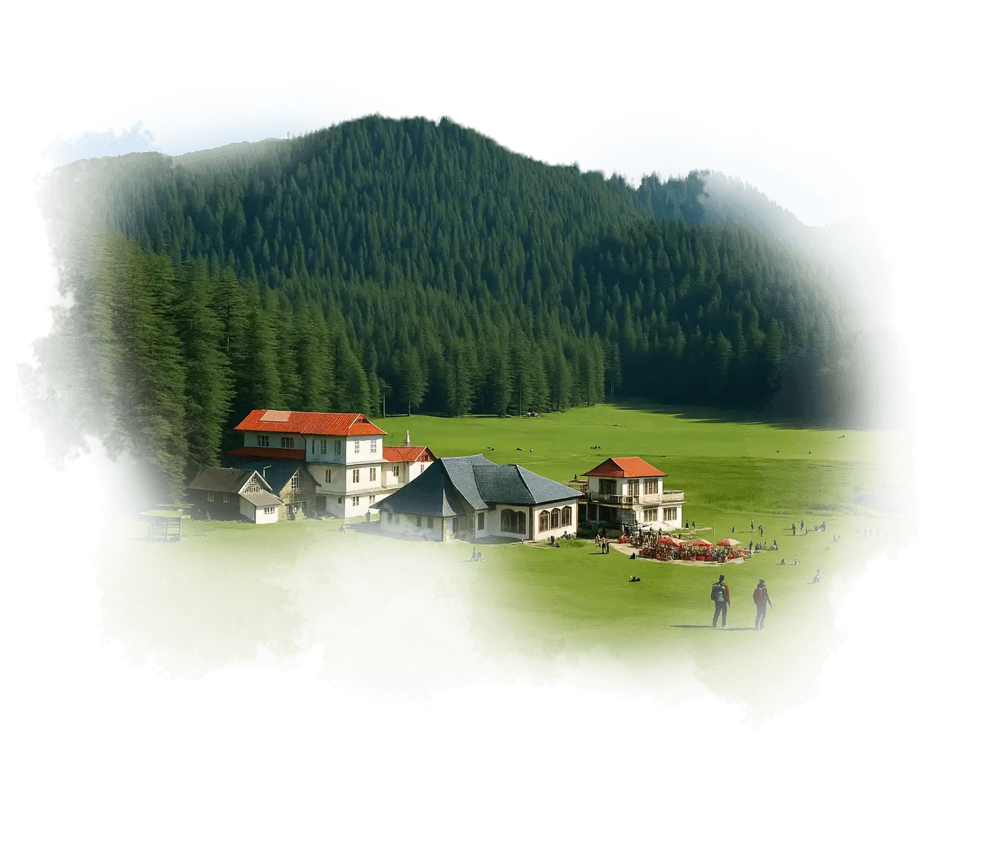
Kullu is called the Valley of Gods, and every village proves it true. Deities travel in palanquins during Dussehra, when hundreds of gods gather to bless the valley. People here weave shawls, grow apples, and have meetha baath, chana dal, khatta and more during fairs or festivals.
From the busy town to the peaceful Tirthan and Banjar valleys, Kullu holds a beauty that feels both sacred and familiar, like home in the mountains.
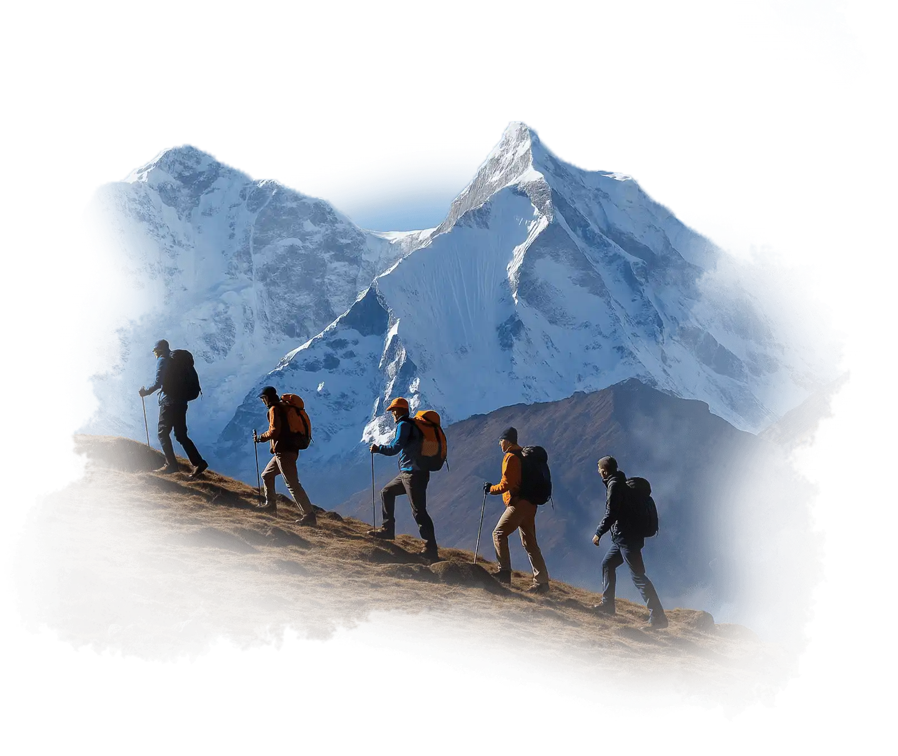
Shimla may be the capital, but its real beauty lies not only in its old colonial charm but also in the beautiful mountain life of Upper Shimla area. In Upper Shimla, mornings begin with temple bells and apple orchards shining under the mist.
Families cook siddu, bhadu dal and rajma on wood stoves while the city below runs the state. It’s where colonial rooftops blend with village homes, and every foggy evening feels like a page from an old story.
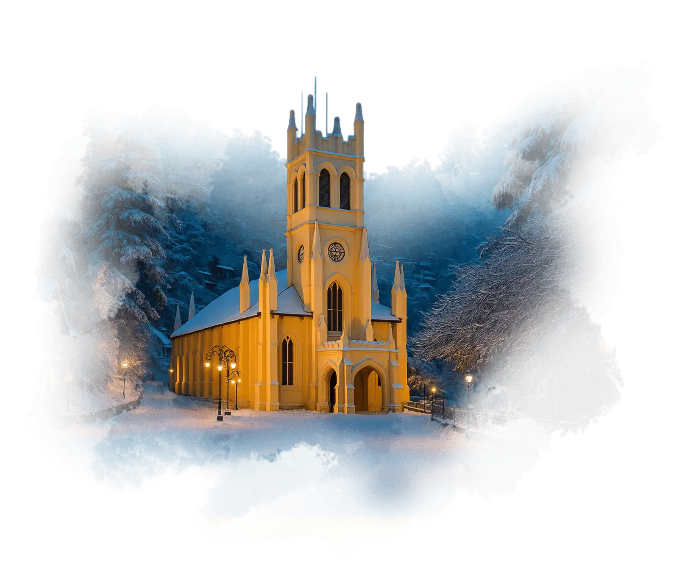
Kangra stretches from the tea gardens of Palampur to the monasteries of McLeodganj and the temples of Jwalamukhi. It’s a district of many voices: the rhythm of Kangri songs, the taste of madra and khatta, the calm of McLeodganj’s streets.
Artists still paint in the old miniature style, and farmers pick tea leaves under soft morning light. Kangra doesn’t rush it unfolds quietly, one valley at a time.
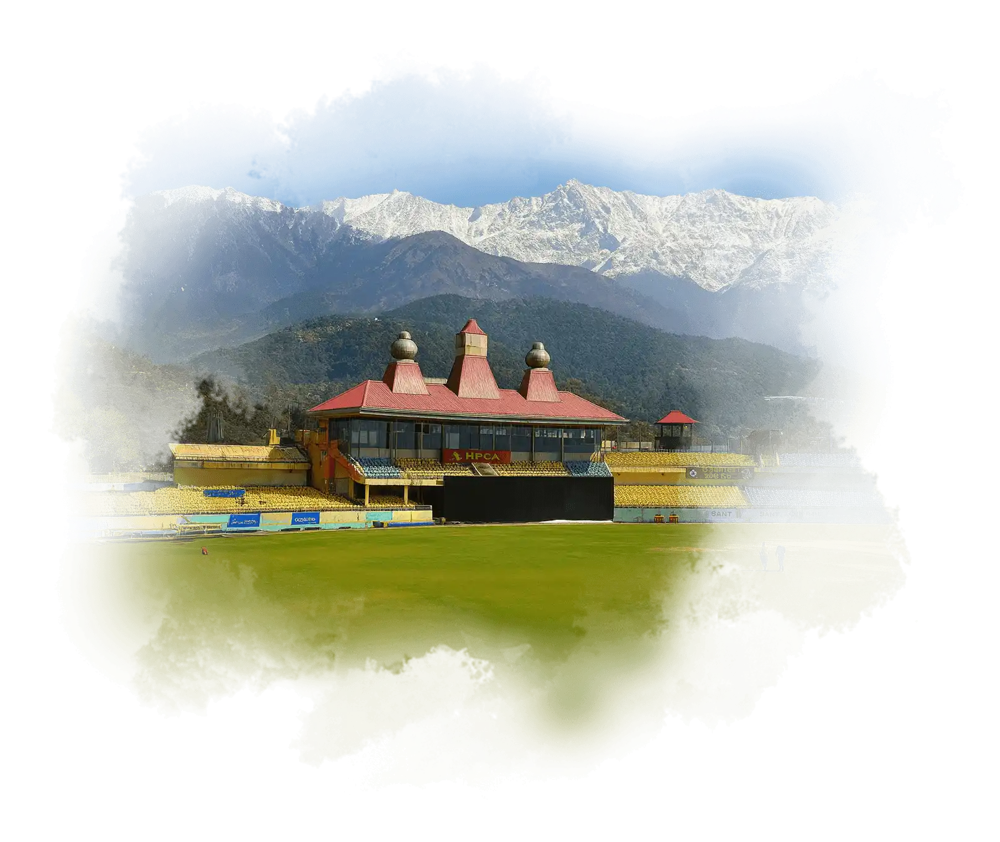
Sirmaur greets you with peach blossoms and kind faces. Known as the Peach Bowl of India, it’s a softer Himachal warmer, slower, and intensely local. At Renuka Ji Lake, the reflection of the goddess shimmers in the water, and fairs fill the air with music and prayer.
People cook ainkulu, patande, maah dal, pude, and speak Sirmauri with an easy smile. Faith and farming keep the rhythm steady here.
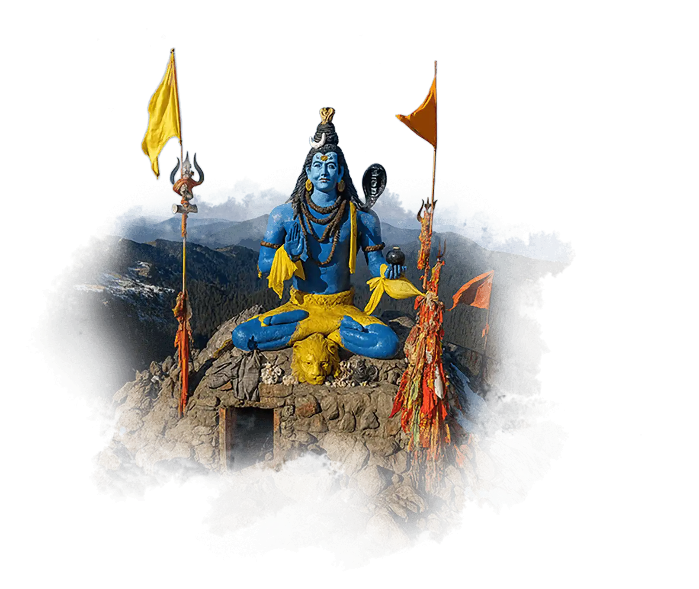
Mandi is where the hills sound like temple bells. Called Chhoti Kashi, it has more old shrines than streets, and during Shivratri, gods from hundreds of villages arrive together to celebrate.
People here still cook dham in brass pots: sepu badi, maah dal, and boondi ka meetha, served on leaf plates. For the snowcapped mountains, visit its serene villages like Barot and Janjehli.
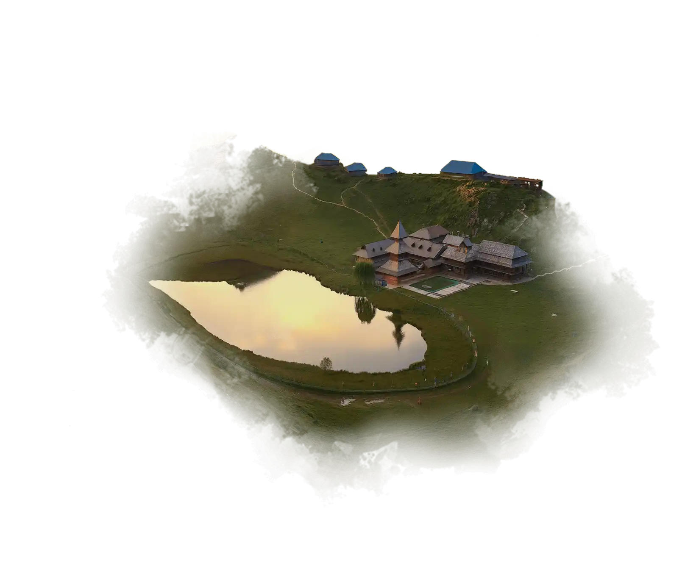
Solan is Himachal’s easy middle, never too hot, never too cold. It brews beer, grows mushrooms, and still finds time for a fair every summer. The Shoolini Festival fills the streets with laughter and drums, while nearby Kasauli stays calm under pine trees.
Solan feels less like a tourist stop and more like a place you could quietly belong.
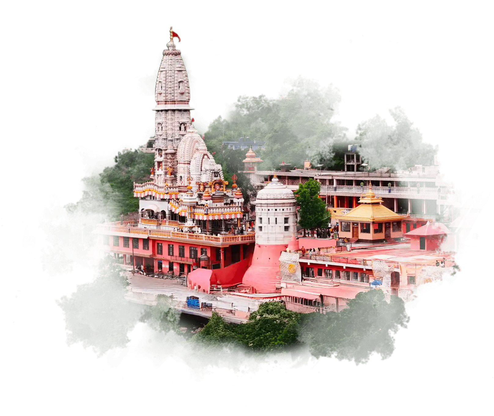
Bilaspur was once a town on land; now half of it lies underwater. The old city was submerged to create Gobind Sagar Lake, and life moved uphill with it. People here fish, trade, and gather for the Nalwari Fair, where cattle, wrestling, and songs share the same field.
Bilaspuri dham is very famous and includes rajma madra, khatta, sepu badi, and sweet mitha, all cooked slowly in brass pots.
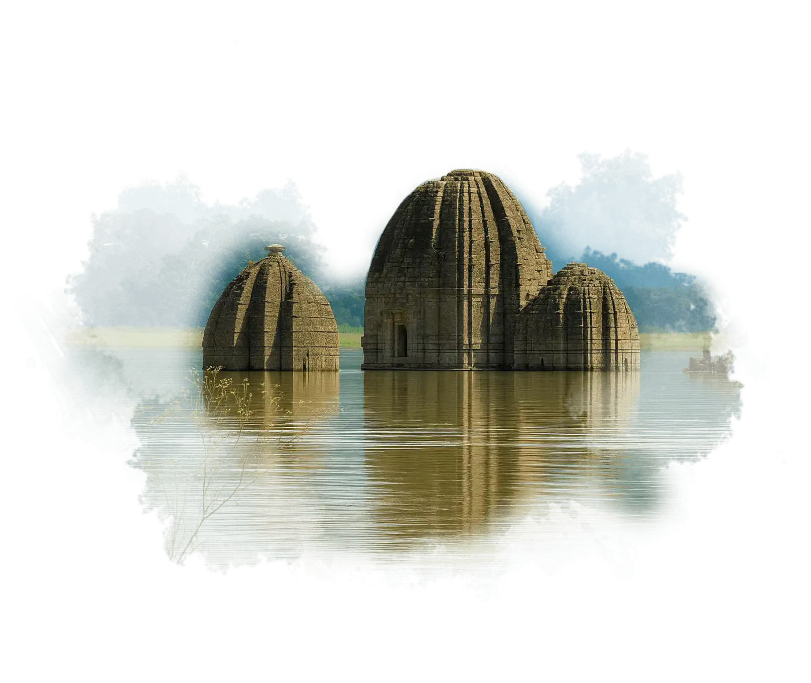
Hamirpur doesn’t try to impress you; it wins you over slowly. It’s a land of soldiers, teachers, and storytellers, where evenings are filled with old jheras songs of heroes and home.
The hills are low, the people grounded, and the local dham is rich and earthy, cooked in mustard oil. Hamirpur stands for honesty, discipline, and quiet strength.
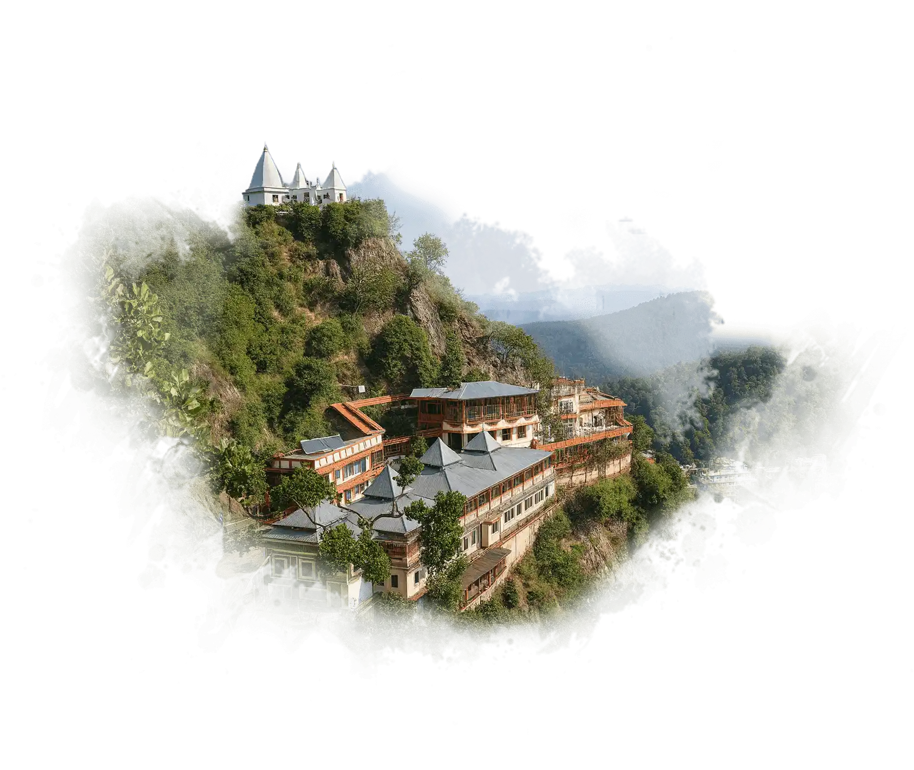
Una is the gateway to Himachal, warmer, flatter, and welcoming. Wheat grows where apples don’t, and the dialect carries the rhythm of both Himachal and Punjab. People greet you with “Sat Sri Akal” as easily as “Namaste.”
Chintpurni Temple, one of the famous Shakti Peeths, draws pilgrims all year round. Una connects two worlds, the plains and the hills, and carries the heart of both.
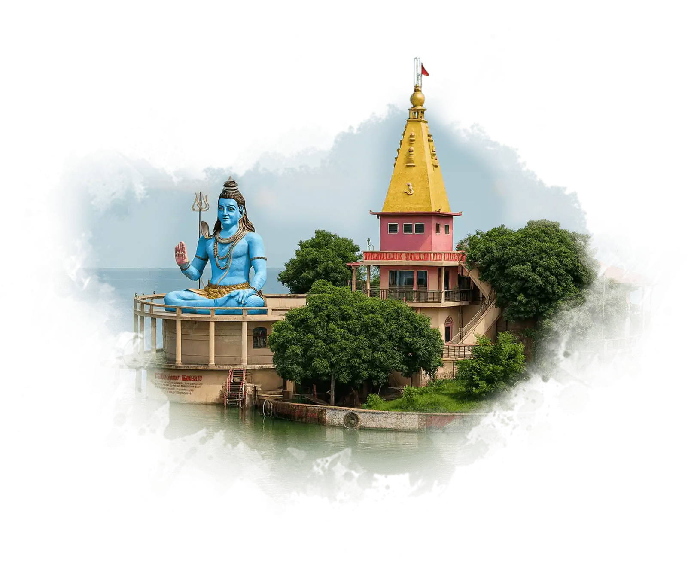